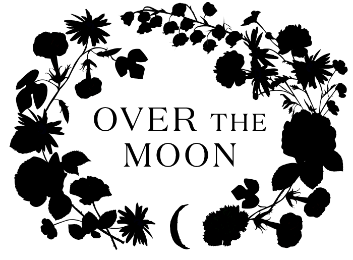
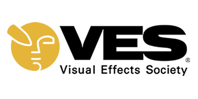
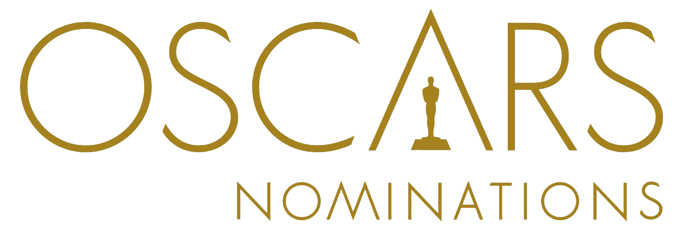
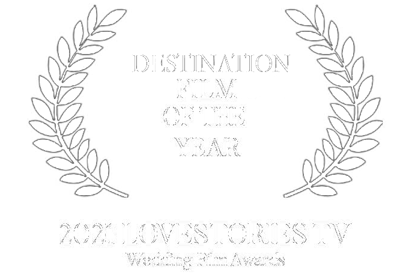
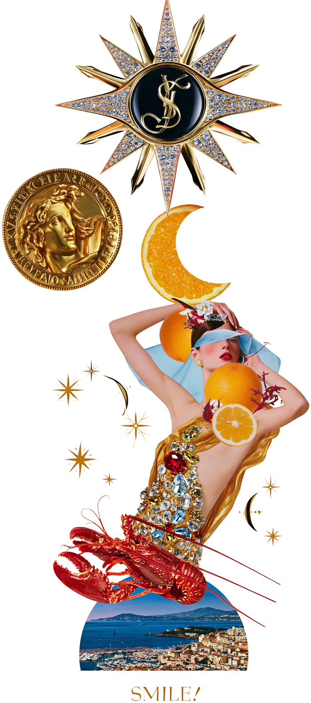

— Recognition
Awards & press
Chromata Films has been filming luxury weddings since 2016. The work has been recognised by the wedding film industry and published by the magazines that cover this world most closely.
Awards
The Love StoriesTV award was won for a film shot at Lake Como ... the full story is in the journal. The visual-effects recognitions predate the studio: before weddings, Kevin Lopez spent a decade in Hollywood VFX on films including Star Wars: The Last Jedi, The Great Gatsby, Beauty and the Beast and Avengers: Infinity War. More about the team →
As seen in
Our films and the weddings we have filmed have been published by Vogue, Harper's Bazaar, Brides, People, Over the Moon, Cosmopolitan, Elle, WedLuxe, Wedding Style Magazine, THE WED and Style Me Pretty.
Anna Andres and David's wedding at Hôtel du Cap-Eden-Roc was published in Vogue, Cosmopolitan and Elle. Angela and Allister's Paris wedding was featured in Brides.




Trusted by planners
We are recommended by the planners who run the most demanding celebrations in Europe ... among them Alejandra Poupel, Sacks Productions, Mindy Weiss, House of Kirschner, Palazzo Eventi and The Wedding Planners Monaco.
"It is with great pleasure and genuine enthusiasm that I recommend Chromata Films. Over the years, I have had the privilege of working alongside Kevin and his team on numerous events, and they have consistently impressed me not only with their extraordinary talent, but also with their kindness, professionalism, and dedication to their craft.
What sets Chromata Films apart is their remarkable ability to capture the heart and soul of an event. They don't simply record moments ... they tell a story. Kevin has an incredible gift for seeing the details, emotions, and connections that often go unnoticed, weaving them together into films that allow clients to relive their most cherished memories for years to come.
As a planner, I deeply value creative partners who understand the importance of collaboration, and Kevin and his team are among the very best. They bring a calm and reassuring presence to every event, work seamlessly with fellow vendors, and always place the client's experience at the center of everything they do. Their professionalism is matched only by their warmth and generosity of spirit.
The films they create are beautiful, emotional, and timeless. Every project reflects not only technical excellence, but also a genuine passion for storytelling and a commitment to honoring each client's unique journey.
I recommend Chromata Films wholeheartedly and without hesitation. Any client fortunate enough to work with Kevin and his team will receive not only an exceptional film, but also the support of true professionals who care deeply about their work and the people they serve."
Sacks Production · Wedding Planner

— Press enquiries
Writing about us?
For press materials, film stills, interviews or submissions, write to contact@chromatafilms.com and we will come back to you the same week.
Get in touch →